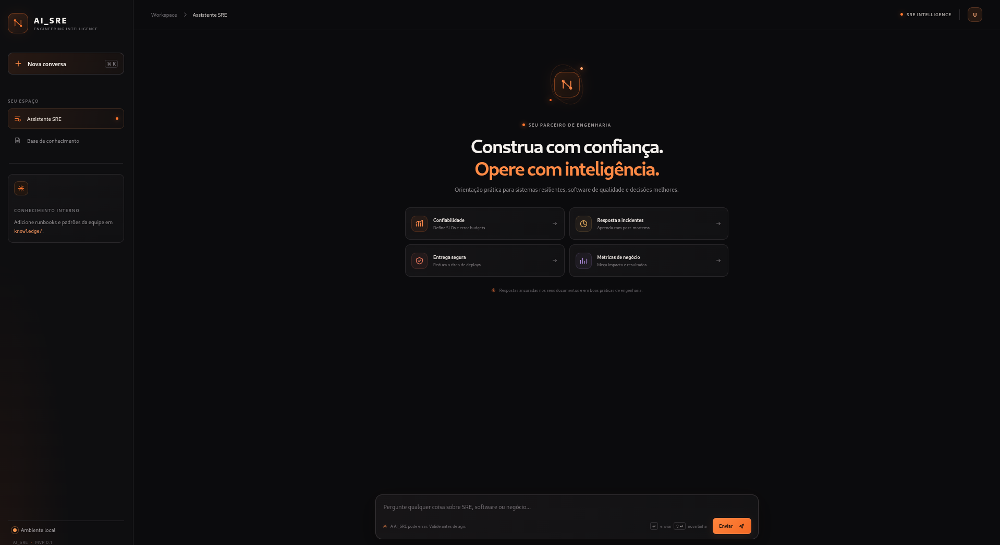
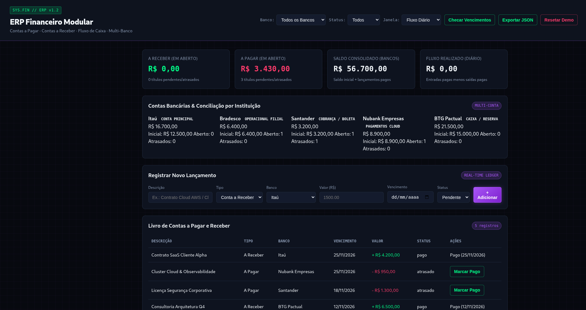
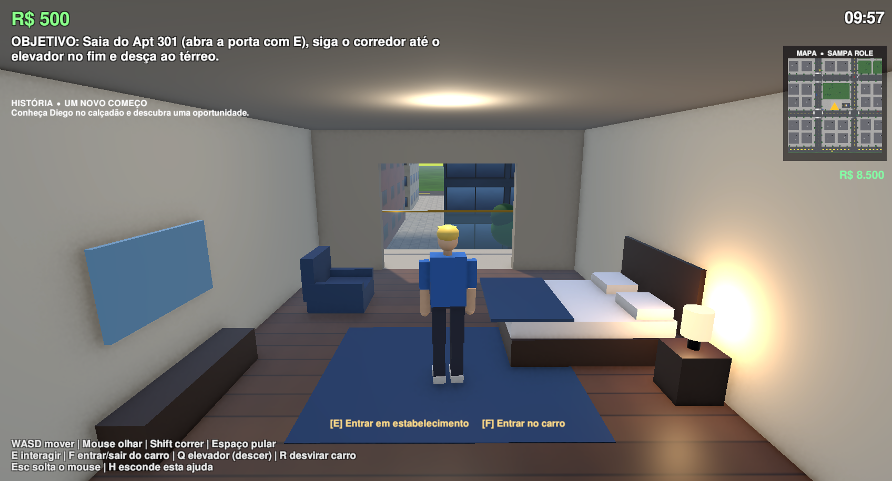
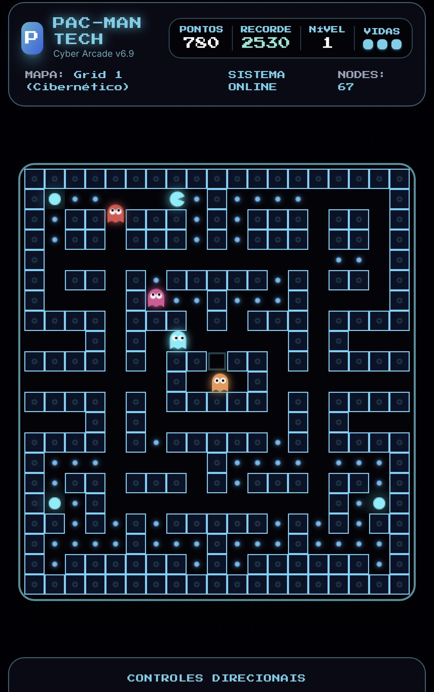
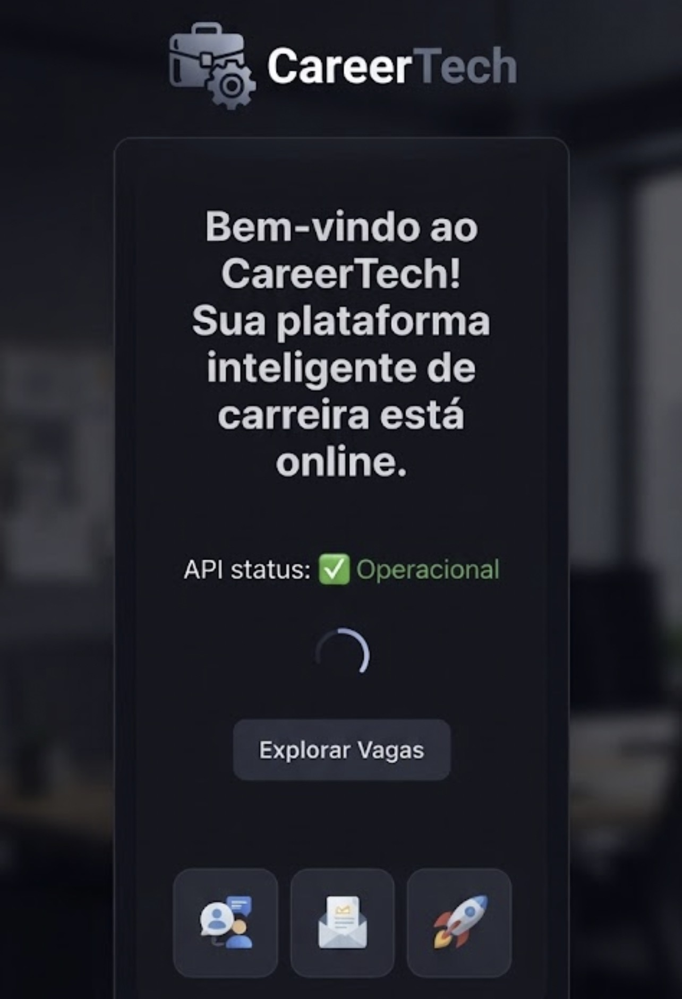
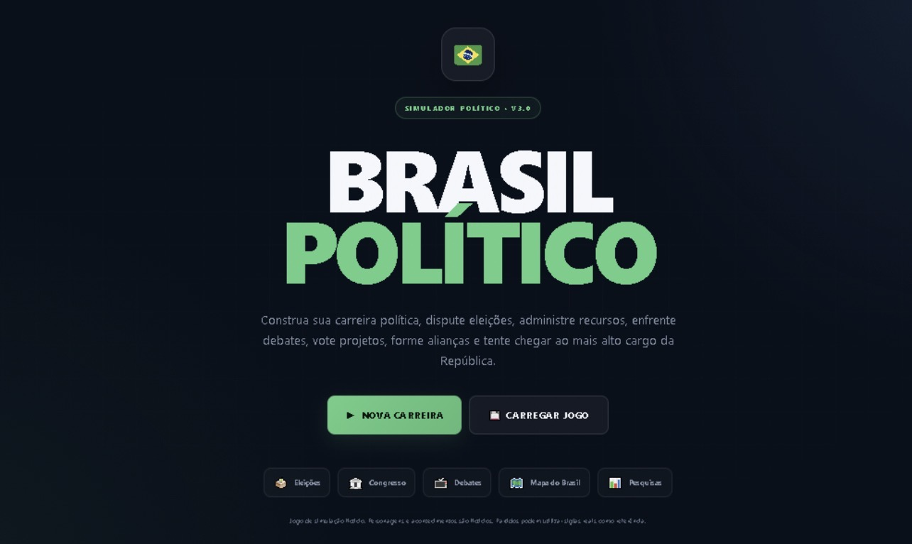
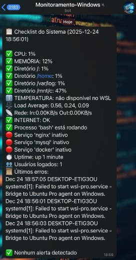
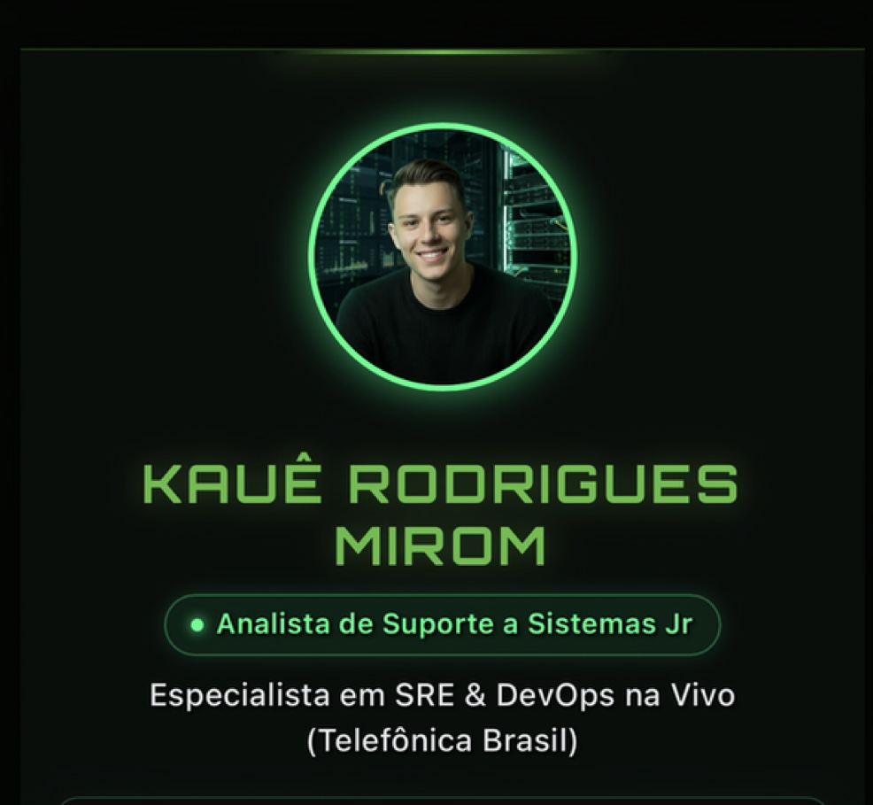
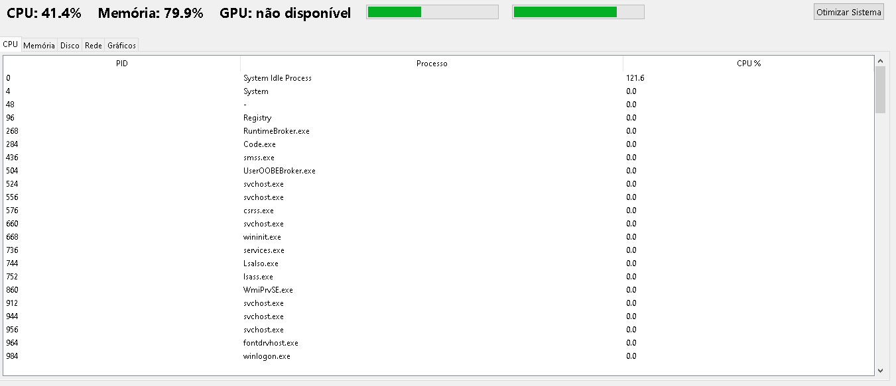
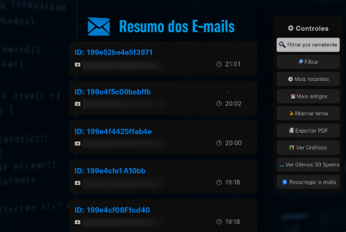

AmpliarSRE AI - Inteligência artificial focada em metodologias SRE
AI_SRE é um assistente de inteligência artificial para apoiar práticas de SRE, engenharia de software e operações de negócio. O projeto oferece uma interface de chat própria, consulta documentos internos em Markdown e roda localmente com Ollama e Llama 3.2.
Ver Projeto
AmpliarERP Financeiro Modular
Sistema ERP Financeiro focado no controle de contas a pagar, contas a receber, fluxo de caixa diário e mensal, status de pagamento (pendente, pago e atrasado) e conciliação de contas bancárias separadas por instituição.
Ver Projeto
AmpliarM🎮 SAMPA ROLE V2 — Desenvolvimento de um mundo aberto urbano com Unity e C#
O SAMPA ROLE V2 é um projeto independente de desenvolvimento de jogos criado com o objetivo de construir uma experiência de mundo aberto inspirada no ambiente urbano de São Paulo, combinando programação, simulação, exploração e interatividade.
Ver Projeto Ampliar
Ampliar
Monitoramento em tempo real da saúde, latência e SLA de microsserviços de telecom...
Como Analista de Sistemas, sei o quanto é importante garantir a estabilidade dos nossos serviços. Nas minhas horas vagas, criei o OmniWatch: um dashboard em React e Tailwind que simula o monitoramento em tempo real da saúde, latência e SLA de microsserviços de telecom...
Ver Projeto
AmpliarPac-Man Tech Pro — Arcade Edition
Desenvolvimento Web com Html/Css e JavaScript. Feito pelo Gemini Plus uma ferramente com diversas oportunidades de desenvolvimento de sistema.
Ver Projeto
AmpliarCareerTech Platform em Java
Plataforma inteligente de gestão e inteligência de carreira desenvolvida para conectar profissionais a oportunidades de forma ágil, contando com uma arquitetura moderna baseada em microsserviços e APIs de alta confiabilidade.
Ver Projeto
AmpliarSimulador de Jogo Web - Carreira Política Brasileira
O projeto foi construído utilizando HTML, CSS e JavaScript, com uma arquitetura modular que separa a interface, regras de negócio e dados da simulação.
Ver Projeto Ampliar
Ampliar
Protótipo - Mapeamento de Jornada Do Usuário
Atividade desenvolvida na faculdade na disciplina Jornada e Interface do Usuário, com foco na aplicação de conceitos de UX/UI Design, experiência do usuário e construção de interfaces digitais.
Ver Projeto
AmpliarAutomação Linux com Telegram: CPU, Memória, Disco e Mais!
Agora consigo acompanhar o uso de CPU, memória, disco, conexão com a internet e até processos críticos — tudo em tempo real, direto no meu celular 📱. O script roda no Linux (via WSL) e está agendado com cron para verificar o sistema a cada 5 minutos. Se algo ultrapassa os limites definidos, recebo uma notificação instantânea no Telegram
Ver Projeto
AmpliarPortfólio Profissional em HTML, CSS e JavaScript (Versão 3.0)
Evoluí o meu portfólio pessoal para a sua terceira versão, adotando uma identidade visual de nível corporativo e voltada para sistemas (SRE/Observabilidade).
Ver Projeto
AmpliarAnalisador OTZ – Otimização e Monitoramento de Sistema
Uma aplicação desktop voltada para otimização e análise de desempenho de sistemas Windows, com foco em eficiência, leveza e usabilidade. O projeto nasceu da necessidade de automatizar tarefas de manutenção e oferecer uma visão clara do comportamento do sistema em tempo real.
Ver Projeto
AmpliarResumo Inteligente de E-mails com Python + HTML + JS
Desenvolvi uma aplicação web que resume e organiza e-mails automaticamente, separando mensagens relevantes de spams e exibindo gráficos interativos com estatísticas de envio.
Ver Projeto